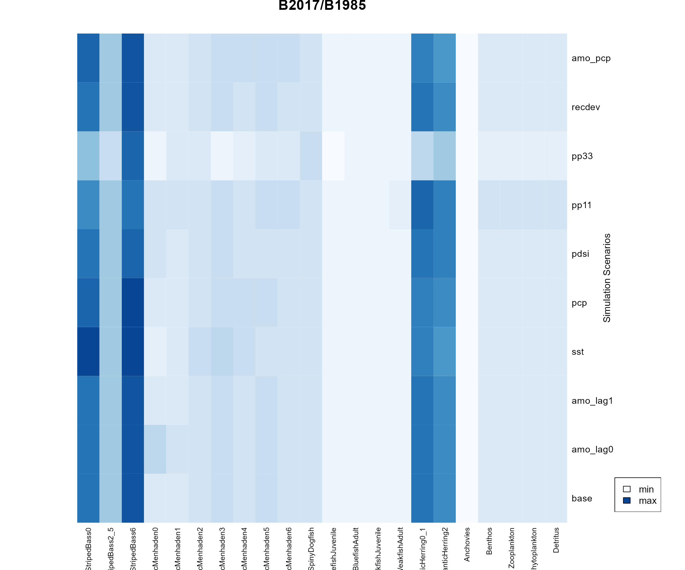
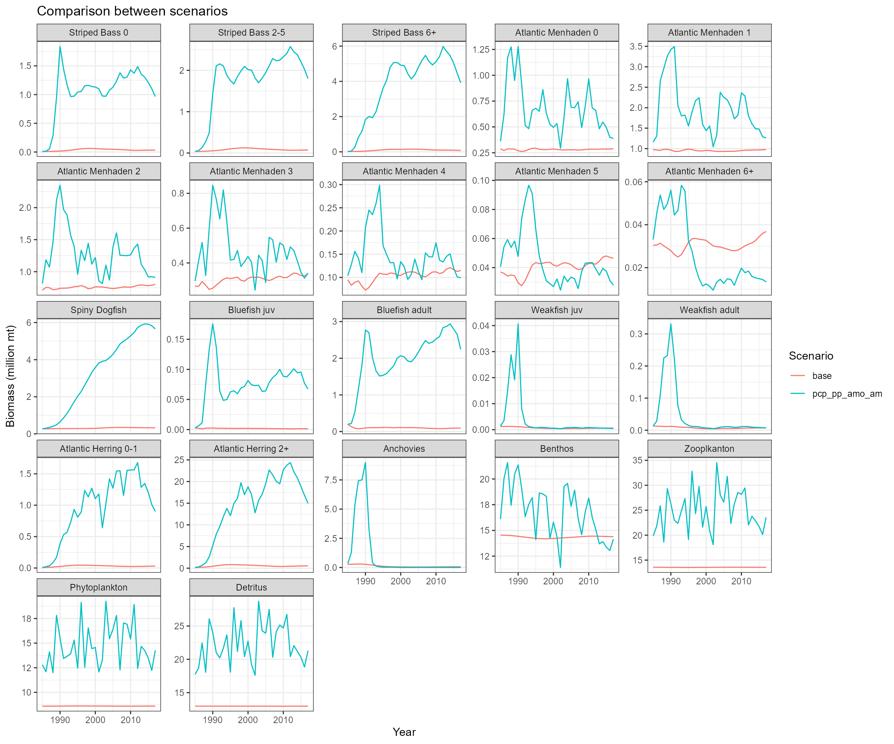

Ecosystem simulation with environmental drivers
Updated on March 8, 2022
04_Ecosystem_simulation_with_environmental_drivers.RmdSimulation scenarios
We want to incorporate climate, environmental, or biological drivers to the Ecopath with Ecosim (EwE) model. Base on Buchheister et al. (2016) paper, we explored the following scenarios:
| scenario_id | driver_code | driver_name | driver_category | justification | data_source | sum_of_squared_differences_menhaden0 | sum_of_squared_differences_total |
|---|---|---|---|---|---|---|---|
| 1 | base | Base | None | None | Ecosim outputs without environmental consideration | 30 | 2339 |
| 2 | amo_lag0 | Atlantic Multidecadal Oscillation Index with lag 0 | Climate | Indicator of climate conditions; linked to recruitment variability of NW Atlantic fishes; linked to menhaden-like species age 0 fish through settings in environmental responses | https://psl.noaa.gov/data/timeseries/AMO/ | 37 | 2407 |
| 3 | amo_lag1 | Atlantic Multidecadal Oscillation Index with lag of 1 year | Climate | Indicator of climate conditions; linked to recruitment variability of NW Atlantic fishes; linked to menhaden-like species age 0 fish through settings in environmental responses | https://psl.noaa.gov/data/timeseries/AMO/ | 34 | 2343 |
| 4 | sst | Kaplan sea surface temperature | Environmental | Affects fish physiology, behaviour, and various basic system properties; linked to menhaden-like species age 0 fish through settings in environmental responses | https://psl.noaa.gov/data/timeseries/AMO/ | 32 | 2380 |
| 5 | pcp | Precipitation (average value from VA, MD, CT, RI, and MA) | Environmental | Alters availability of high-salinity habitat, affects nutrient loading, production, hypoxia, and foodweb structure; linked to menhaden-like species age 0 fish through settings in environmental responses | https://www.ncdc.noaa.gov/cag/statewide/time-series | 27 | 2298 |
| 6 | pdsi | Palmer drought severity index (average value from VA, MD, CT, RI, and MA) | Environmental | Long-term indicator of drought conditions; reflects river discharge and precipitation; linked to menhaden-like species age 0 fish through settings in environmental responses | https://www.ncdc.noaa.gov/cag/statewide/time-series | 32 | 2452 |
| 7 | pp11 | Primary production spline 11 | Biological | Force primary production; linked to phytoplankton through settings in forcing function | Chagaris et al., 2021 | 34 | 2394 |
| 8 | pp33 | Primary production spline 33 | Biological | Force primary production; linked to phytoplankton through settings in forcing function | Chagaris et al., 2021 | 36 | 3152 |
| 9 | recdev | Recruitment deviations | Biological | Recruitment variablity of Atlantic menhaden; linked to menhaden-like species age 0 fish through settings in environmental responses | BAM assessment report | 29 | 2339 |
| 10 | amo_pcp | Atlantic Multidecadal Oscillation Index with lag of 1 year and precipitation | linked to menhaden-like species age 0 fish through settings in environmental responses | 31 | 2290 | ||
| 11 | pcp_pp_amo_am | Atlantic Multidecadal Oscillation Index with lag of 1 year (age-0 fish) and precipitation (PP) | linked pcp to phytoplankton through settings in forcing function and linked amo to menhaden-like species age 0 fish through settings in environmental responses | 39 | 20958 |
Relative biomass
To check if any functional groups have relatively large decrease, we calculated relative biomass (\(B_{2017}/B_{1985}\)) for each functional group and each scenario. 
Key findings:
- Base scenario 1: EwE without any environmental drivers and the sum of squared differences was 2339.
- Scenario 5: Base EwE with incorporation of precipitation data had the lowest sum of squared differences of 2298.
- Scenario 3: Base EwE with incorporation of Atlantic Multidecadal Oscillation Index (i.e., lag of one year) had a sum of squared differences of 2343.
- Scenario 10: EwE with incorporation of both AMO index and precipitation data had a sum of squared differences of 2290.
- The minimum \(B_{2017}/B_{1985}\) was 0.16 (Anchovies from pp33 scenario) and other \(B_{2017}/B_{1985}\) values were above 0.2.
Biomass over time from key scenarios

Key findings:
- The climate and environmental drivers were linked with age 0 of menhaden-like species only, only menhaden, zooplankton, phytoplankton, and detritus showed fluctuations over time. Other functional groups showed relatively smooth trends.
- The sharp decrease in age 0 menhaden biomass was caused by the incorporation of AMO index. The AMO index decreases over time in 1985.
Bratio and biomass over time from scenario 11: link precipitation with primary production and link AMO with age-0 fish
Bratio:
| StripedBass0 | StripedBass2_5 | StripedBass6 | AtlanticMenhaden0 | AtlanticMenhaden1 | AtlanticMenhaden2 | AtlanticMenhaden3 | AtlanticMenhaden4 | AtlanticMenhaden5 | AtlanticMenhaden6 | SpinyDogfish | BluefishJuvenile | BluefishAdult | WeakfishJuvenile | WeakfishAdult | AtlanticHerring0_1 | AtlanticHerring2 | Anchovies | Benthos | Zooplankton | Phytoplankton | Detritus | |
|---|---|---|---|---|---|---|---|---|---|---|---|---|---|---|---|---|---|---|---|---|---|---|
| base | 3.7 | 2 | 4.1 | 1.0 | 1.0 | 1.1 | 1.3 | 1.21 | 1.26 | 1.2 | 1.2 | 0.47 | 0.46 | 0.50 | 0.57 | 3.7 | 3.4 | 0.23 | 0.99 | 1.0 | 1.0 | 1.0 |
| pcp_pp_amo_am | 106.1 | 48 | 199.2 | 1.1 | 1.1 | 1.1 | 1.1 | 0.96 | 0.69 | 0.4 | 20.7 | 23.73 | 11.25 | 0.38 | 0.56 | 95.0 | 84.4 | 0.00 | 0.88 | 1.2 | 1.1 | 1.2 |
Biomass over time: 